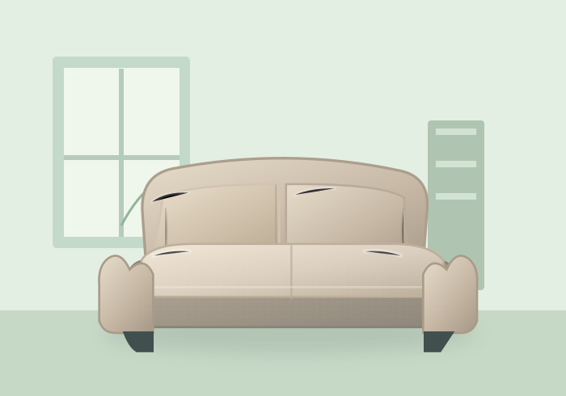
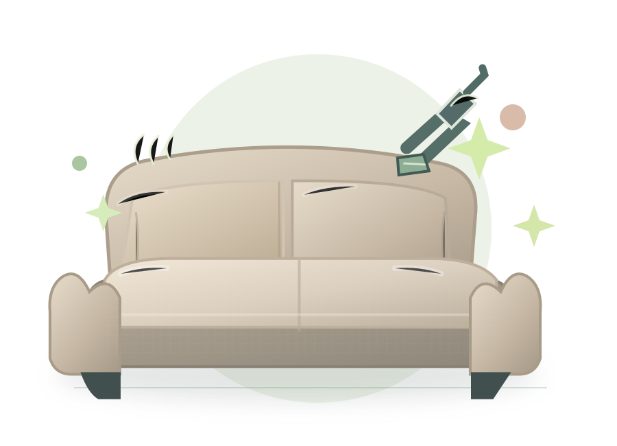
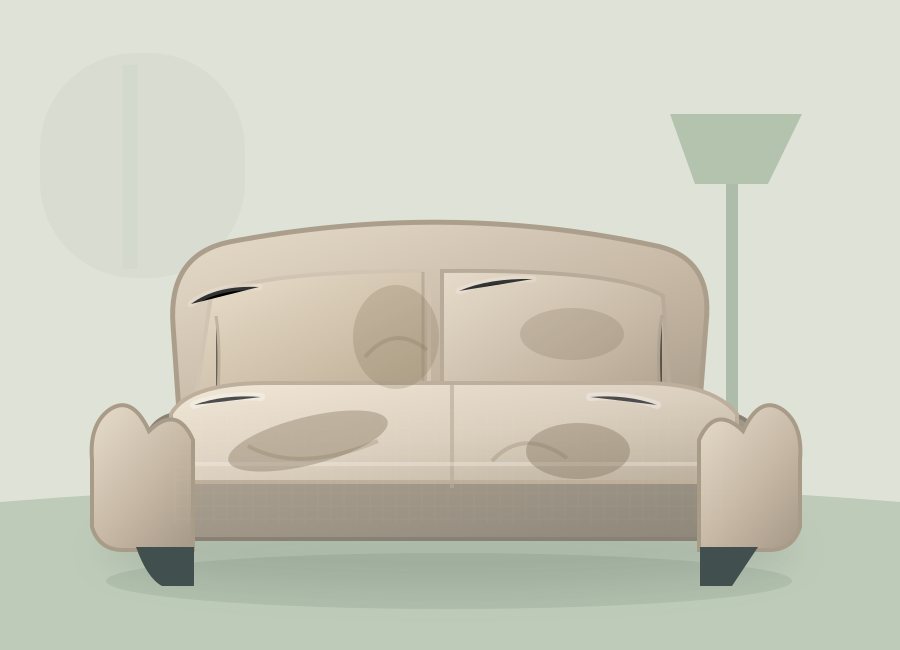
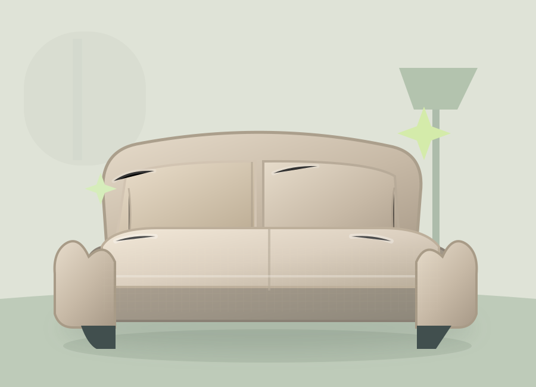
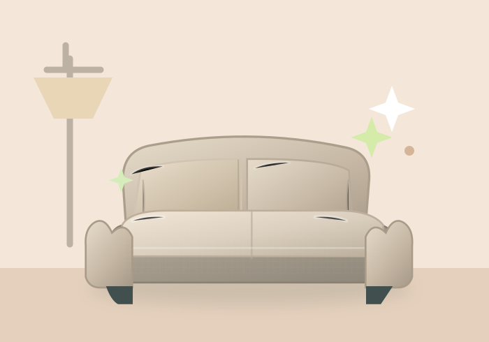
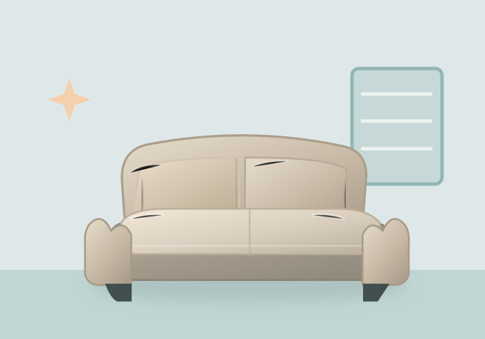
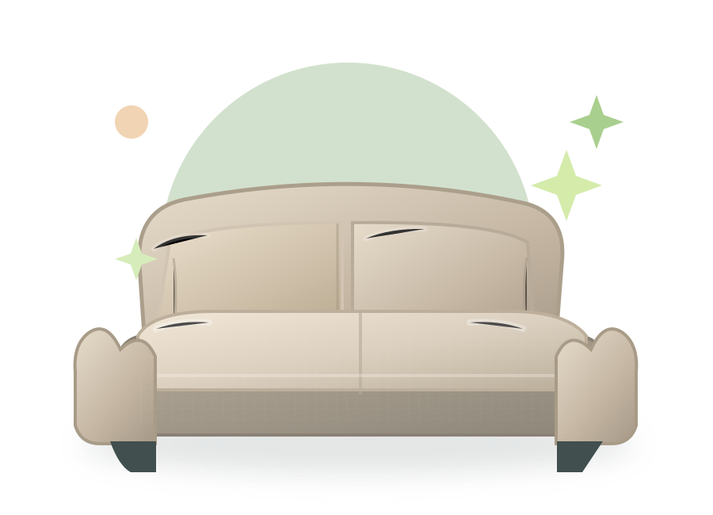
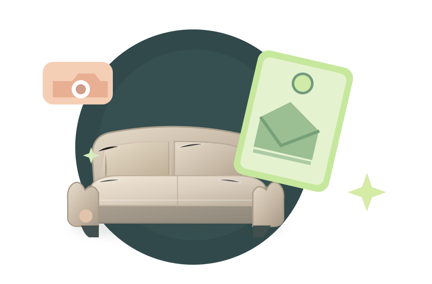
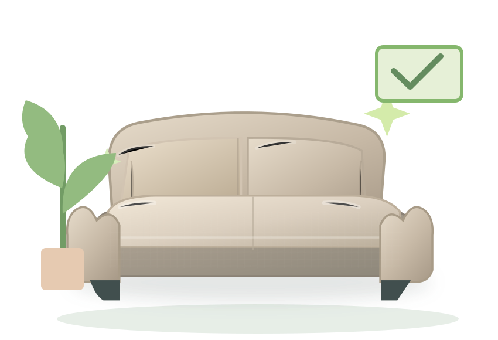
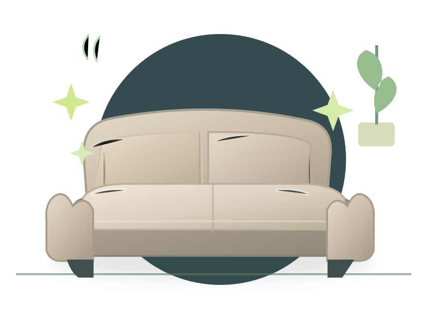

ИллюстрацияДиван после шести лет использования
Компания рассказала о чистке дивана в бизнес-центре «Инвертор». По публикации, мебель прежде не чистили.
Помогаем вернуть мебели ухоженный вид. Покажите, что нужно почистить, — и подготовьте запрос на оценку по фотографии.

Потяните разделитель и сравните два состояния мебели. Это демонстрационные SVG-иллюстрации — настоящие результаты смотрите в VK.

ДО
ПОСЛЕСтилизованное сравнение. Не фотографии выполненного заказа.
В публикациях компании есть конкретные диваны, длительность чистки и фотографии. На официальной версии сайта эти материалы смогут стать главным аргументом доверия — после согласования их использования.
Открыть работы в VKТри публичных примера работ из сообщества в ноябре 2026 года. Подробности приведены со слов автора публикаций.

ИллюстрацияКомпания рассказала о чистке дивана в бизнес-центре «Инвертор». По публикации, мебель прежде не чистили.

ИллюстрацияОпубликовано преображение дивана. Для оценки похожей работы компания предлагает отправить фотографию.

ИллюстрацияВ публикации указан конкретный заказ: примерно два часа работы и стоимость 4 000 ₽. Это не общий тариф.
Главная подтверждённая специализация — химчистка диванов. Другие виды мебели указаны как варианты запроса, их доступность нужно уточнить.
Прямые, угловые и офисные: обсудите тип мебели и характер загрязнений для предварительной оценки.
Подготовить заявку
Кресло, матрас или стул? Можно подготовить вопрос о возможности такой химчистки. Пока эти направления не подтверждены отдельно.
Подготовьте понятное обращение: какая мебель, сколько предметов и что нужно почистить. Фотографии можно выбрать для просмотра прямо здесь.

Стоимость одного конкретного заказа на химчистку дивана, опубликованного 11 ноября 2026 года.
Размер и форма дивана, ткань и сложность загрязнений влияют на объём работы. Поэтому для нового заказа лучше сначала обсудить фотографию и детали.
Подготовить запрос на оценкуНичего лишнего — короткий путь от фотографии дивана до согласования химчистки.
Выберите тип дивана и подготовьте фотографии.
Расскажите о пятнах, ткани и пожеланиях.
Напишите компании в VK и уточните условия и стоимость.
Специалист выполнит согласованную работу.
Компания публиковала пример химчистки дивана в офисном бизнес-центре «Инвертор». Подобные задачи можно обсудить и для вашей организации.
Обсудить задачу
Мы не придумываем отзывы, рейтинги и имена мастеров. Доступные публикации, фотографии и комментарии компании можно посмотреть на её странице VK.
Посмотреть сообществоСобрали важные детали. А окончательные условия лучше уточнять непосредственно у компании.
По опубликованным сообщениям компания предлагает оценку по фотографии. Тип дивана, размеры и загрязнения помогут специалисту уточнить стоимость. Универсального подтверждённого прайса для сайта пока нет.
Возможность удаления зависит от ткани, природы пятна и предыдущих попыток чистки. Полное удаление любого пятна заранее не гарантируется.
В публикациях 11 и 16 ноября 2026 года описаны конкретные заказы продолжительностью примерно два и три часа. Время другого заказа зависит от мебели и загрязнений.
В описании сообщества заявлен бесплатный выезд по городу. Возможность и границы бесплатного выезда необходимо подтвердить перед заказом.
В демоверсии можно выбрать и просмотреть фотографии локально и скопировать запрос. Фото нужно прикрепить к сообщению в VK самостоятельно. Данные не отправляются с сайта.
Время высыхания зависит от материала и условий в помещении. Точное время после чистки следует уточнять у исполнителя.
Опишите задачу в удобной форме и свяжитесь с исполнителем напрямую. Подтверждённый канал связи — сообщество VK.
Номер телефона и адрес не публикуем: их связь с этим сообществом не подтверждена.